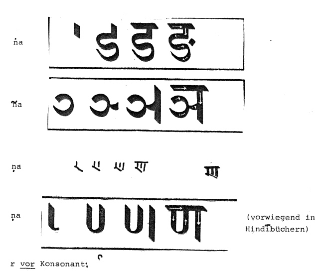
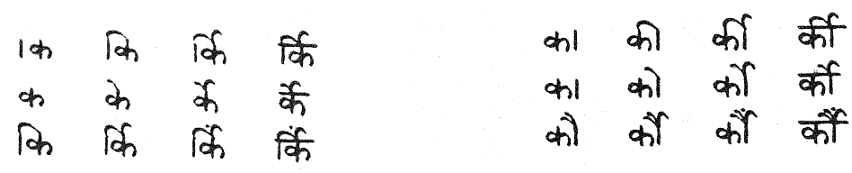
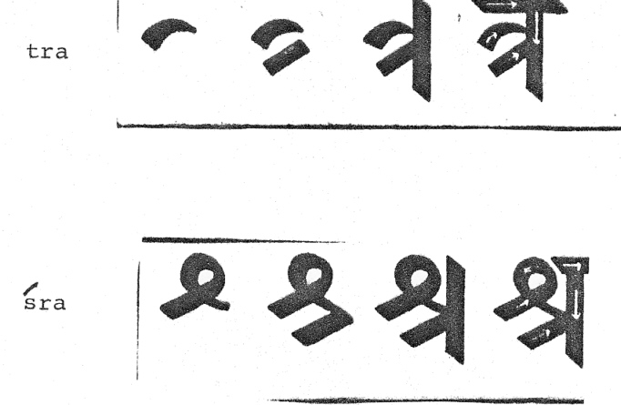

mailto:payer@payer.de
Zitierweise | cite as:
Payer, Alois <1944 - >: Sanskritkurs. -- Devanāgarī = देवनागरी. -- 7. Schriftübung 7. -- Fassung vom 2009-01-27. -- URL: http://www.payer.de/sanskritkurs/schrift07.htm
Erstmals hier publiziert: 2008-11-22
Überarbeitungen: 2009-01-27 [Verbesserungen]
Anlass: Lehrveranstaltungen 1980 - 1984
©opyright: Dieser Text steht der Allgemeinheit zur Verfügung. Eine Verwertung in Publikationen, die über übliche Zitate hinausgeht, bedarf der ausdrücklichen Genehmigung des Verfassers
Dieser Text ist Teil der Abteilung Sanskrit von Tüpfli's Global Village Library
Falls Sie die diakritischen Zeichen nicht dargestellt bekommen, installieren Sie eine Schrift mit Diakritika wie z.B. Tahoma.
Die Devanāgarī-Zeichen sind in Unicode kodiert. Sie benötigen also eine Unicode-Devanāgarī-Schrift.

Beispiele für r vor Konsonant:
र्क rka, र्च rca, र्ट rṭa, र्त rta, र्प rpa, र्श rśa, र्ह rha, र्का rkā, र्कि, rki, र्की rkī, र्कु rku, र्के rke, र्कै rkai, र्को rko, र्कौ rkau, र्कं rkaṃ, र्कां rkāṃ, र्किं rkiṃ, र्कीं rkīṃ, र्कुं rkuṃ, र्कें rkeṃ, र्कैं rkaiṃ, र्कौं rkauṃ
Zur Schreibung:

r nach Konsonant: /
bei Buchstaben mit senkrechtem Abschlussstrich: / an senkrechtem Abschlussstrich
bei anderen Buchstaben: unten am Buchstaben
क्र ख्र ग्र घ्र ङ्र्
kra khra gra ghra ṅraच्र छ्र ज्र झ्र ञ्र
cra, chra, jra, jhra, ñraट्र ठ्र ड्र ढ्र् ढ्र स्ण्र
ṭra ṭhra ḍra ḍhra ṇraत्र थ्र द्र ध्र न्र
tra thra dra dhra nraप्र फ्र ब्र भ्र म्र
pra phra bra bhra mraय्र व्र
yra vraश्र ष्र स्र
śra ṣra sraह्र
hra
Zur Schreibung:

A) Schreiben Sie in Devanāgarī und geben Sie die Übersetzung an (setzt Lektion 8 voraus):
śravaṇa, darśana, kāraṇa, sarga, krodhaḥ, netram, śruti, kurvate. śudraḥ śṛṇoti. śrutirvedaḥ. dhenurviśati. sādhurguruḥ. gururyajate. kavirmāghaḥ.
B) Lesen, transliterieren und übersetzen Sie:
श्रुतिः | गुर्वी | क्रुध् | शृणोति | कविर्भारविः | कविर्हर्षदेवः | पशुर्धेनुः | शूद्रेतरा | श्रोत्रम् ||
Zu Lektion 8